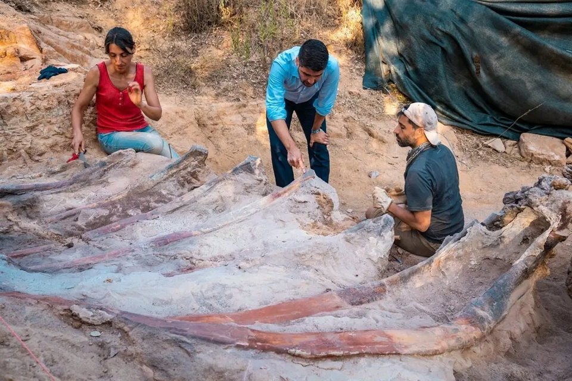

Encuentran los fósiles del que podría ser el dinosaurio más grande de Europa
Según Hector Rodriguez - National Geographic
Los restos fósiles del que podría ser el dinosaurio más grande jamás encontrado en Europa están
siendo
desenterrados en estos momentos en el patio trasero de una vivienda de la localidad portuguesa de
Pombal.
Todo comenzaría en el año 2017, cuando el dueño de la propiedad en la que yacen los restos, durante
el
transcurso de una construcción,
se topó con lo que parecían una extraña serie de fragmentos de
huesos fosilizados y se puso en contacto con la Universidad de Lisboa.